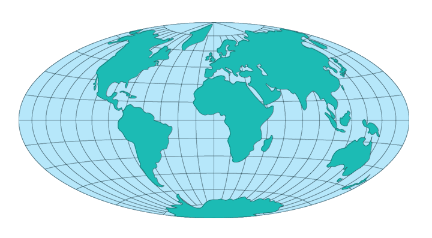

Decision Support System for Map Projections of Small Scale Data
Usage
Hammer-Aitoff

Usage:
*
A common variation of the
Lambert Azmuthal is called Hammer or Hammer-Aitoff.
Devised by Erst Hammer in 1892, the Hammer-Aitoff consits of halfing the vertical
coordinates of the equatorial aspect of one hemisphere and doubling the values
of the meridians from the center. This projection retains the equal area property
of the Lambert Azmuthal, but losses the
azmuthal property.
* Usage information source:
Map
Projections
A
Working
Manual, USGS Proffesional Paper 1395, John P. Snyder